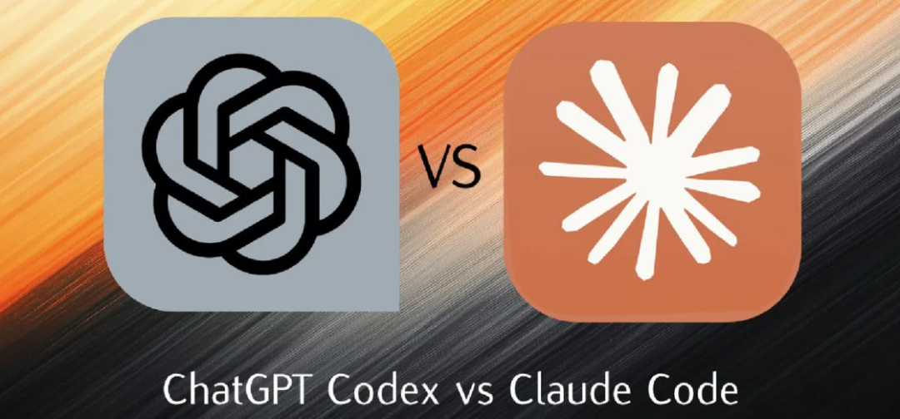

最近老有人问我：Claude Code 和 Codex 到底哪个更好用？
说实话，这个问题问得就不太对。或者说，你根本问错了方向。
说白了，这俩玩意儿底层跑的大模型（Claude 4.x 家族 vs GPT-5.x 家族）迭代那么快，今天的结论明天就过时。但有些东西变得没那么快——比如它们的架构设计、命令结构、权限模型，还有怎么处理会话、怎么做沙盒隔离、能不能多线程干活。
这些才是决定你天天用的时候爽不爽的关键。
我以前也这样，上来就看 benchmark 分数，结果发现坑就坑在那些基准测试根本体现不出日常开发的难受劲儿。这次我花了几天时间，把俩工具的官方文档翻了个底朝天，实际敲了一堆命令，对比它们处理同样工作流时的表现。
结果呢？这篇文章就给你掰扯清楚，这俩工具现在到底各自站在哪儿。
先说怎么装上这俩货
Codex 是用 Rust 写的，Claude Code 是 TypeScript 套 Node.js 18+。说白了，Codex 就一个二进制文件，下载下来就能跑，轻得很；Claude Code 你得先装 Node 环境，麻烦一点。
不过现在人家俩人都推荐用原生安装脚本，别用 npm 了。
装 Claude Code：
curl -fsSL https://claude.ai/install.sh | bash # 原生二进制（推荐）
brew install --cask claude-code # Homebrew（macOS）
npm install -g @anthropic-ai/claude-code # NPM（已弃用）装 Codex：
npm i -g @openai/codex # NPM（全平台）
brew install --cask codex # Homebrew（macOS）装完以后，这俩都活在终端里，能读代码、改文件、跑命令、管 git。都不是那种 IDE 插件假装自己是 agent，上来就是 CLI-first 的原生设计。
不过说实话，它们也都有 IDE 扩展。Claude Code 支持 VS Code 和 JetBrains；Codex 支持 VS Code、Cursor 和 Windsurf。
最爽的是，Claude Code 跑在 macOS、Linux 和 WSL 上；Codex 原生支持 macOS、Linux 和 Windows PowerShell——Windows 开发者终于不用折腾 WSL 了，这点 Codex 确实贴心。
启动和会话管理
启动方式倒是挺像的。敲工具名，可选加个提示词，就进去了。
Claude Code 这么玩：
claude # 交互式会话
claude "explain this project" # 带提示词的会话，解释这个项目
claude -p "query" # 非交互式（管道模式）
cat file | claude -p "query" # 处理管道输入的内容Codex 这样：
codex # 交互式 TUI 会话
codex "query" # 带提示词的会话
codex exec "query" # 非交互式执行
codex exec -o output.md "q" # 执行并输出到文件但问题来了，非交互模式差别挺大。
Claude Code 用 -p 走管道模式，简单粗暴。Codex 用 codex exec 当完整子命令，带一堆 flag——可以输出 JSON、开 ephemeral 模式、限制最大回合数、还能恢复会话。
说白了，Codex 的 exec 命令更适合 CI/CD 自动化。Claude Code 的管道模式简单，但也支持预算上限（--max-budget-usd）和回合限制（--max-turns）。
长时间编码的时候，这俩开始分道扬镳了。
Claude Code 把会话当成有名字的、可恢复的对话：
• /compact—— 压缩上下文历史，保留摘要• /clear—— 清空对话历史• /fork—— 从当前对话分支出新对话• /rename—— 给会话起个有意义的名字• claude -c—— 继续最近的会话• claude -r "name"—— 按名字恢复会话
Codex 的会话结构不太一样：
• codex resume --last—— 接上最近的会话• codex resume <id>—— 按 ID 恢复• codex fork—— 从现有会话创建新线程• /side—— 临时侧边对话，不污染你的主线。
项目上下文和模型切换
每个 AI 编程工具都得理解你项目的规范。这俩都用项目根目录下的 markdown 文件解决。
Claude Code 用 CLAUDE.md，每次会话开始时读取，作为持久的项目简报——编码标准、构建命令、测试规范、架构决策都能写进去。还能建 .claude/rules/*.md 放模块化规则文件。
Codex 用 AGENTS.md，概念和格式完全一样。它支持层级结构：根目录的 AGENTS.md、特定目录的文件、用户级覆盖。还有个实用限制（project_doc_max_bytes，默认 32KB）防止上下文爆炸。
说白了，这俩功能一模一样，只是名字不同而已。
都能在中途切换模型，这对平衡质量和成本很关键。
Claude Code 三个档位：
• Opus 4.7 —— 最强，Max 和 Team Premium 计划默认 • Sonnet 4.6 —— 日常主力，Pro 和 Enterprise 默认 • Haiku 4.5 —— 又快又便宜，适合探索和子代理
还有，Opus 有个 /fast 模式在研究预览中，输出更快但更贵。Max 计划支持最多 1M token 的上下文，对大代码库确实是优势。
Codex 目前提供：
• GPT-5.5 —— 最新旗舰模型，正在 Codex 各平台逐步推出 • GPT-5.4 —— 稳健的默认选项，如果 5.5 还没上线就用这个兜底 • GPT-5.4 mini —— 轻量任务和子代理工作 • GPT-5.3-Codex —— 专门优化的编程模型 • GPT-5.3-Codex-Spark —— 近乎即时输出（每秒 1000+ token），仅 Pro 用户可用的研究预览功能
还支持配置 profile（--profile fast、--profile thorough），把模型、沙盒和审批设置打包成命名预设。另外，Codex 通过 --oss 标志支持 Ollama 和 LM Studio 的开源模型。
沙盒和权限：这俩是完全不一样
Codex 用操作系统原生沙盒。macOS 上用 Seatbelt（Apple 的 sandbox-exec）；Linux 上用 Bubblewrap 做命名空间隔离，Landlock 做后备；Windows 上用 Restricted Tokens。这个沙盒在操作系统层面强制执行——AI 根本不可能靠嘴炮说服它放行。
Codex 提供三种沙盒模式：
codex --sandbox read-only # 默认，最严格
codex --sandbox workspace-write # 编辑项目文件
codex --add-dir ../shared # 授予额外目录访问权限read-only 是默认最严格的，workspace-write 能改项目文件，danger-full-access 无限制。
Claude Code 走规则驱动路线。权限在设置文件里配成允许/拒绝/询问列表：
{
"permissions": {
"allow": ["Read", "Edit", "Bash(git:*)"],
"deny": ["Bash(rm -rf:*)"],
"ask": ["WebFetch", "Bash(docker:*)"]
}
}这更灵活，你能写细粒度的 glob 模式来预批准哪些 bash 命令——但它是应用层强制，不是 OS 层。Claude Code 还有权限模式循环，会话中按 Shift+Tab 能在 default、acceptEdits、auto 和 plan 模式间切换。
讲真，Codex 的 OS 级沙盒默认更安全，毕竟不依赖应用层拦截每个操作。但 Claude Code 的规则系统更表达力强，能让你给每个项目定制完全匹配工作流的权限策略。
钩子、配置和自动化
都支持 hooks（在 agent 生命周期特定点触发的 shell 命令）。但 Claude Code 的系统更成熟。
Claude Code 支持约 25 个生命周期事件，包括 PreToolUse、PostToolUse、PermissionRequest、SessionStart、PreCompact 等。还支持三种 hook 处理器：命令 hooks（shell 脚本）、HTTP hooks（发送事件到 web 服务器）、提示词 hooks（把事件传给 Claude 做单轮评估）。Agent hooks 增加第四种，让 Claude 模型在带工具访问的情况下评估。
Codex 通过 ~/.codex/hooks.json 支持 hooks，有 PreToolUse 和 PostToolUse 事件。结构类似，但事件覆盖面窄一些。对大多数开发者，基础功能俩都覆盖了。对构建企业级治理和审计跟踪的团队，Claude Code 的 hook 面更深。
配置方式也不同。Claude Code 用 JSON（settings.json），有层级：enterprise → managed → user → project。Codex 用 TOML（config.toml），支持配置 profile——命名预设如 [profile.fast] 或 [profile.thorough]，把模型、沙盒和审批设置打包在一起：
[profile.fast]
model = "gpt-5.4-mini"
approval_policy = "never"
[profile.thorough]
model = "gpt-5.4"
model_reasoning_effort = "high"
approval_policy = "on-request"Codex 还有 admin 强制机制通过 requirements.toml，让运维团队约束开发者能改什么。这玩意儿是想标准化不同工作流配置的团队的理想选择。
多代理和云执行
Claude Code 管这叫 subagents，说白了就是让几个小弟同时干活。每个子代理有自己的上下文窗口、系统提示词、工具权限和模型选择。你在 .claude/agents/ 里用带 YAML frontmatter 的 markdown 文件定义它们，最多能拉 10 个壮丁并行跑。还有专门的 Agent View（claude agents）监控并行会话，能用 Ctrl+B 把任务放后台，attach 到运行中的会话。
Codex 也支持子代理，通过 TOML 配置定义，默认限制并发为 6 线程（max_threads = 6）。你能给不同子代理分配不同模型——用 GPT-5.4 mini 做探索工作，GPT-5.4 做重推理。
但 Codex 有个 Claude 没有的大杀器：云执行。
codex cloud exec 让你提交任务到 OpenAI 管理的隔离容器里运行。你定义环境，提交任务，然后把结果 diff 拉下来到本地：
codex cloud exec --env ENV "重构认证模块"
codex cloud list --json
codex apply <TASK_ID>对想要"提交后不管"的隔夜开发循环的团队——下班前提交一批任务，早上审查 diff——这是个明显优势。
其他杂项
都支持 MCP（Model Context Protocol）服务器扩展。Claude Code 用 claude mcp add，Codex 用 codex mcp add，后者多个 auth 子命令做认证，算个小便利。
代码审查方面，Claude Code 最近发布了 claude ultrareview，并行生成多个专业审查员做深度分析。Codex 把 codex review 作为一级子命令，带 --json 输出，更 CI 原生，更容易接入现有流水线。
可扩展性上，都支持自定义 slash 命令和技能系统。但 Codex 内置图像生成（gpt-image-2）和网页搜索（--search），Claude Code 得通过 MCP 实现。
总结一下
不是来宣布 winner，但每个工具都有当前领先的领域。
Claude Code 领先在：
• Hook 生态深度——约 25 个生命周期事件，四种处理器类型 • 上下文窗口——Max 计划最高 1M token，对大代码库是真优势 • 本地多代理编排——Agent View、可 attach 的后台会话、最多 10 个并行子代理 • 子代理定制——每个代理的模型选择、工具限制、权限模式 • 插件生态—— claude plugin install带市场支持
Codex 领先在：
• OS 原生沙盒——Seatbelt、Bubblewrap、Landlock、Windows Restricted Tokens，内核级 • 云执行——在 OpenAI 管理的容器上"提交不管"的任务，结果作为 diff 拉下来 • Windows 原生支持——直接在 PowerShell 里跑，不用 WSL • 开源模型支持——通过 Ollama、LM Studio 连本地模型 • 图像生成——内置 gpt-image-2在 CLI 里生成资源• CI/CD 人体工学—— codex exec带 JSON 输出、ephemeral 模式、自动审查流水线• 网页搜索——内置，默认缓存，可开实时模式
如果你要二选一，老实说：拿真实项目试试，然后你就发现哪个最适合你的工作流和目标。